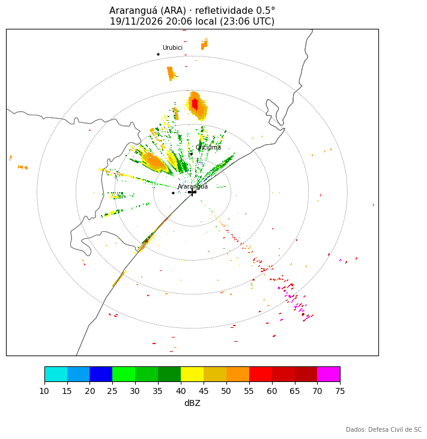
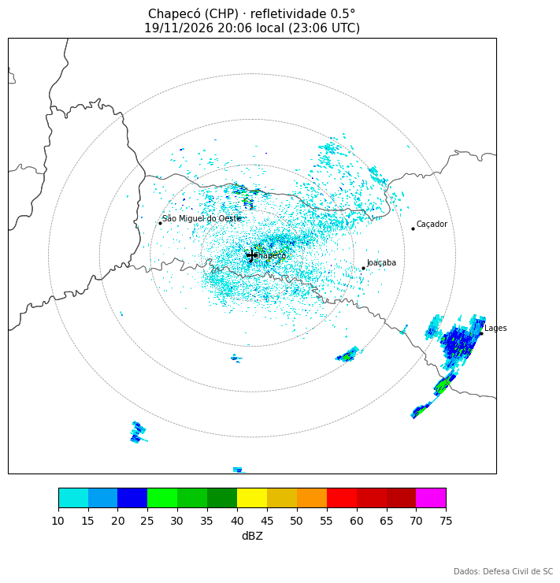

Araranguá (Defesa Civil SC) · refletividade, elevação mais baixa
54 quadros, de 19/11 14:16 local · 17:16 UTC a 19/11 20:06 local · 23:06 UTC.

Chapecó (Defesa Civil SC) · refletividade, elevação mais baixa
56 quadros, de 19/11 14:12 local · 17:12 UTC a 19/11 20:06 local · 23:06 UTC.